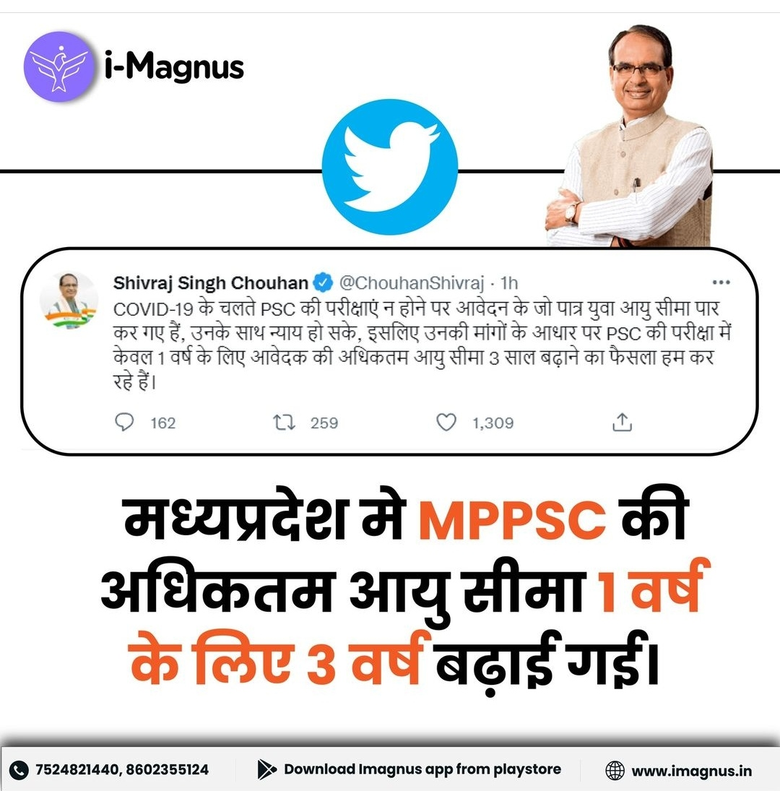
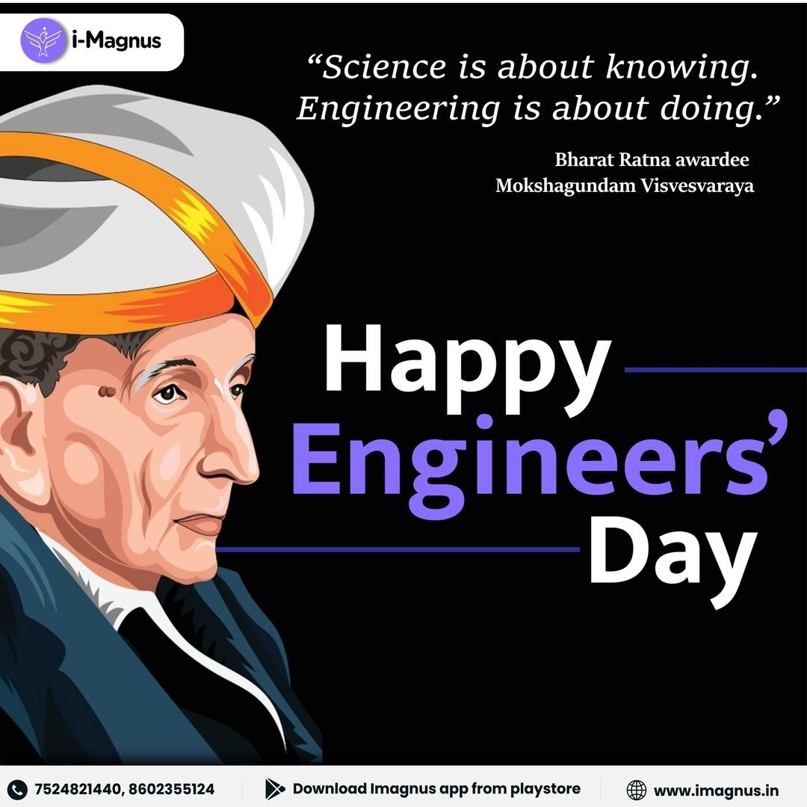
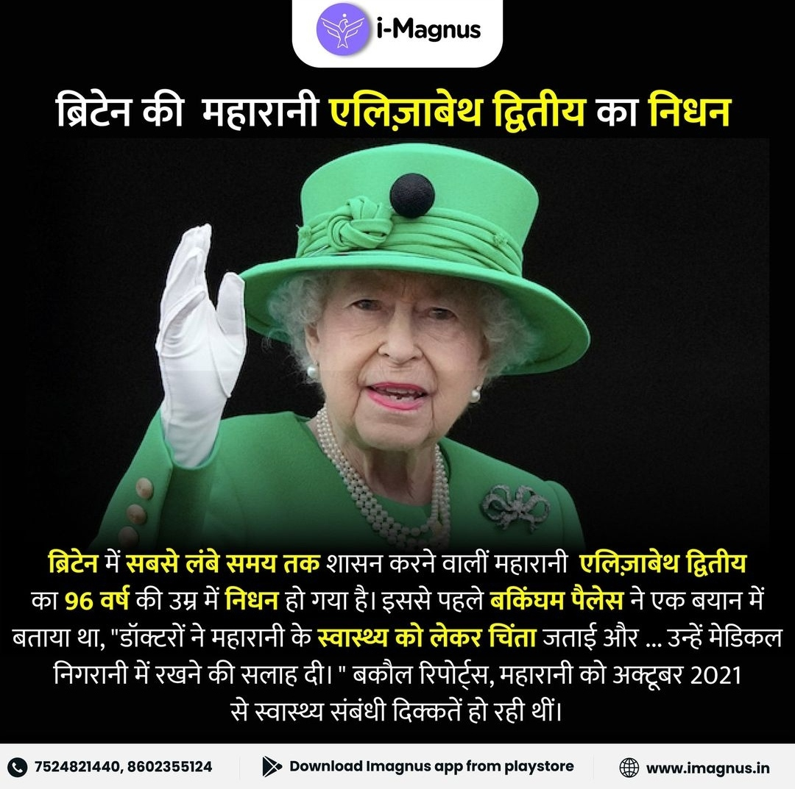
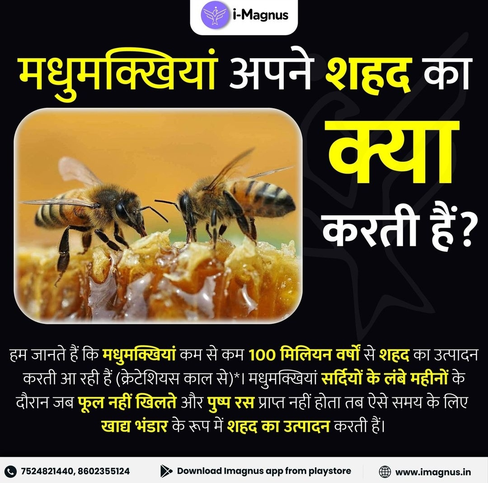
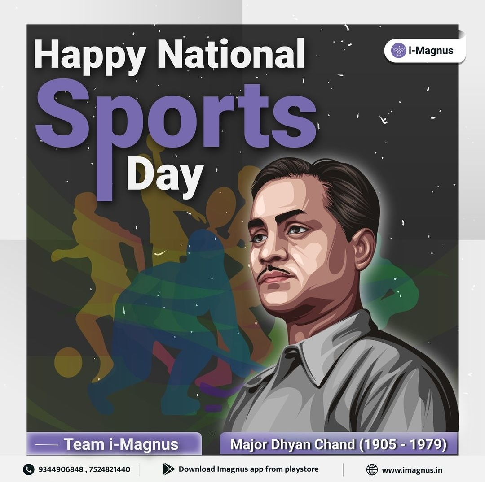

Welcome to my Portfolio
I am passionate about creating unique and effective visual solutions for my clients. Join me on this journey and discover how I can bring your design ideas to life.





About
Welcome to my about page! I'm thrilled that you're here and interested in learning more about me and my work. My passion for design began at a young age and has only grown stronger over the years. I'm constantly seeking new challenges and opportunities to push myself creatively and improve my skills as a graphics designer.
I believe that great design is all about communicating a message and creating an emotional connection with the audience. That's why I approach every project with a focus on storytelling and visual communication. I work closely with my clients to understand their goals and needs, and then use my expertise and creativity to bring their vision to life.
In my free time, you can find me exploring the latest design trends and techniques, attending industry events and conferences, and collaborating with other designers on exciting projects. I'm always eager to learn and grow, and I'm constantly inspired by the incredible creativity and innovation that surrounds us in the world of design.
Thank you for taking the time to get to know me a little better. I hope that my passion for design comes through in my work and that I have the opportunity to work with you on your next project.